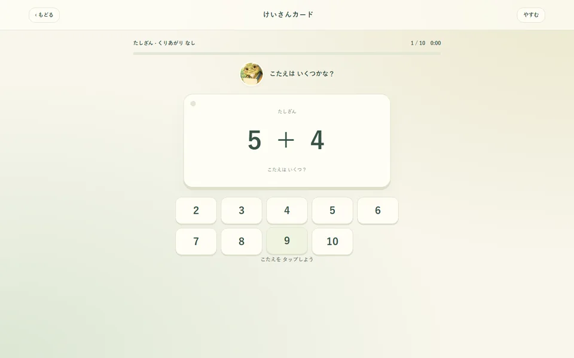

このゲームについて
たし算・ひき算・かけ算からコースを選び、計算カードに取り組みます。答えを選ぶ、声に出して確かめる、同じ答えのカードを探す、答えの小さい順に並べるという四つの遊び方があります。
遊び方
計算コースと遊び方を選んで始めます。カードの式を見て答えを選ぶほか、カードを探したり順番に並べたりできます。必要に応じて数のブロックを表示し、考え方を確かめながら進められます。
ゲーム中に行うこと
- たし算・ひき算・かけ算の答えを考える
- カードの答えを選んだり小さい順に並べたりする
ここではゲーム中の活動を説明しています。能力の向上や、特定の効果・改善を保証するものではありません。